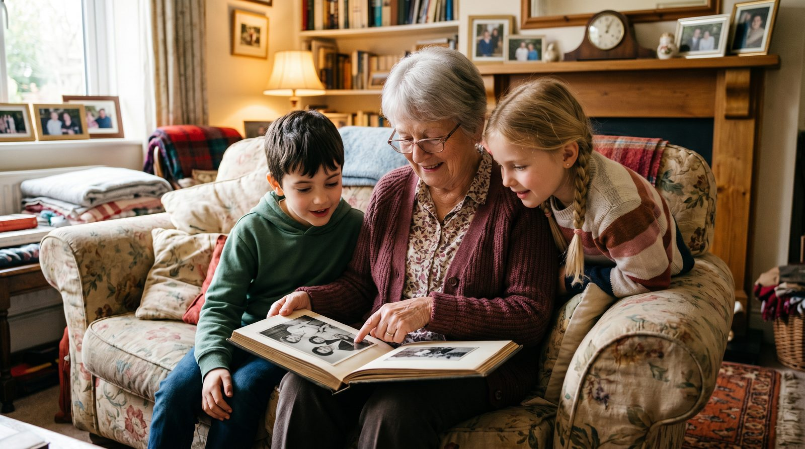

Старые фотографии — это не просто изображения. Это частицы нашей истории, которые заслуживают быть оживлёнными. Узнайте, как легко и быстро вернуть к жизни любимые снимки!
Старые фотографии — это не просто снимки, а целая история, запечатлённая в одном кадре. Оживление таких фотографий может стать отличным подарком для близких к юбилею, годовщине или другому значимому событию. Представьте, как приятно будет увидеть любимого дедушку вновь улыбающимся или услышать смех, который когда-то звучал в вашем доме.
Кроме того, реставрация фотографий помогает сохранить семейные архивы. Старые снимки часто повреждены временем: выцветают, покрываются пятнами, ломаются. Современные технологии позволяют не только восстановить их, но и добавить эмоций, вернув в прошлое движение и жизнь. Для многих это становится способом поддерживать связь с ушедшими поколениями и передавать их историю дальше.
Для успешной реставрации важно правильно выбрать фотографию. Лучше всего подходят снимки в анфас с одним лицом — это позволяет нейросети качественно обработать изображение и добавить движения. Если изображение размыто или сильно повреждено, восстановление может быть сложнее, но не невозможно.
Если у вас есть старые или повреждённые фотографии, не отчаивайтесь. Выберите самое чёткое изображение, на котором лицо различимо, и загрузите его в сервис. Даже если снимок не идеален, современная технология Kling 2.5 способна удивительно точно восстановить детали и оживить его.
Процесс оживления фотографий через VideoAI прост и занимает всего около 60 секунд. Для начала зайдите на сайт botisk.ru, выберите опцию загрузки фото. Вам не нужно регистрироваться — всё быстро и доступно. После загрузки изображения система предложит вам варианты движения, которые можно применить к фото.
Выберите наиболее подходящий вариант, и уже через минуту вы получите готовое видео. Первое видео бесплатно, что позволяет протестировать сервис без каких-либо затрат. После этого вы можете приобрести пакет из 10 видео всего за 290 рублей и продолжить работать со своими архивами.
| Способ | Время | Цена | Результат |
|---|---|---|---|
| VideoAI | ~60 секунд | от 290р за 10 видео | Высокая точность, реалистичные движения |
| Студия | 1-2 недели | от 5000р | Профессиональное качество, дорого |
| Фрилансер | 3-5 дней | от 1000р | Качество зависит от навыков, средняя цена |
| Зарубежные сервисы | ~60 секунд | от $5 за видео | Хорошее качество, высокий порог входа из-за языка |
Оцените, как просто и доступно оживить ваши воспоминания с помощью современных технологий. Узнайте больше о том, как оживить старое фото или посмотрите, как можно оживить фото дедушки и фото бабушки.
Без регистрации. Первое видео — бесплатно. Загрузите снимок — получите живое видео за 60 секунд.
Создать видео из фото →Лучше всего подходят чёткие снимки в анфас с одним лицом. Это позволяет нейросети качественно обработать изображение.
Процесс занимает около 60 секунд. Вы получаете готовое видео практически мгновенно после загрузки фотографии.
Первое видео бесплатно. Далее пакет из 10 видео стоит 290 рублей, что делает услугу доступной для большинства пользователей.